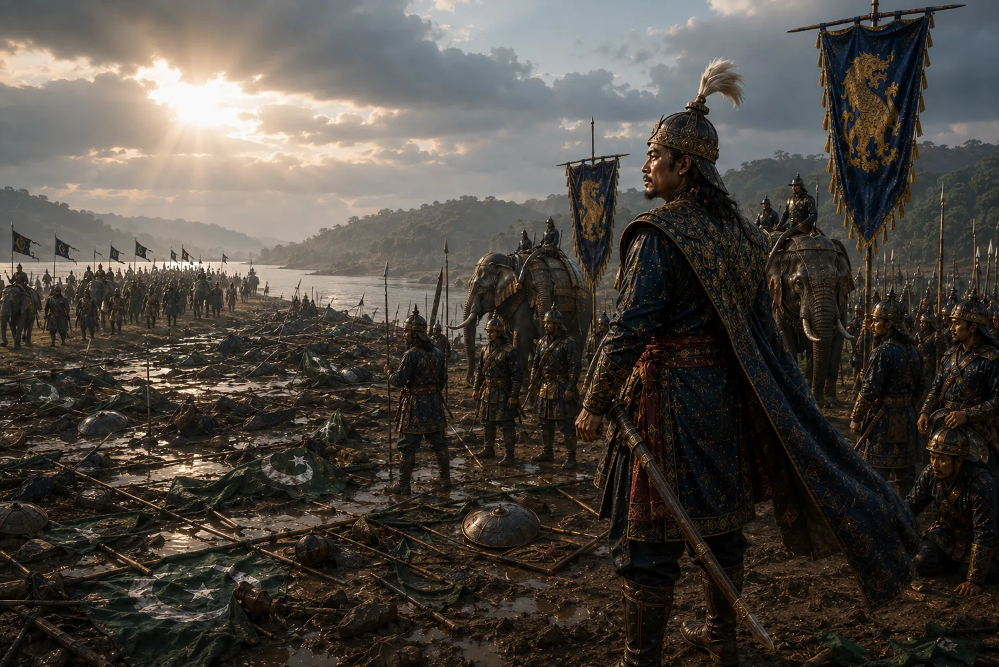

Decisive Victory Over Turbak and Pursuit to Karatoya
1532–1533 · Swarganarayan’s kingdom

Konseng Barpatragohain slays Turbak on the battlefield; Bengal forces routed; Ahoms pursue retreating invaders to the sacred Karatoya River.
Sources have not yet been catalogued for this record.
People: Konseng Barpatragohain, Suhungmung (Swarganarayan), Turbak
Open this scene in the interactive archive · Follow this event on MAP